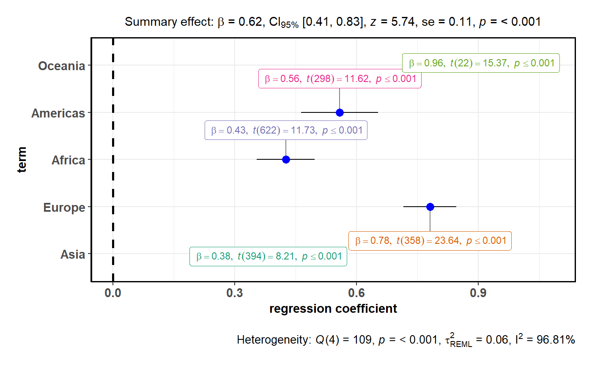

Dot-and-whisker plots for regression analyses
ggcoefstats( x, output = "plot", statistic = NULL, bf.message = TRUE, effsize = "eta", partial = TRUE, nboot = 500L, meta.analytic.effect = FALSE, meta.type = "parametric", conf.int = TRUE, conf.level = 0.95, k = 2, exclude.intercept = TRUE, exponentiate = FALSE, sort = "none", xlab = "regression coefficient", ylab = "term", title = NULL, subtitle = NULL, only.significant = FALSE, caption = NULL, caption.summary = TRUE, point.args = list(size = 3, color = "blue"), errorbar.args = list(height = 0), vline = TRUE, vline.args = list(size = 1, linetype = "dashed"), stats.labels = TRUE, stats.label.color = NULL, stats.label.args = list(size = 3, direction = "y"), package = "RColorBrewer", palette = "Dark2", ggtheme = ggplot2::theme_bw(), ggstatsplot.layer = TRUE, messages = FALSE, ... )
Arguments
| x | A model object to be tidied, or a tidy data frame containing
results. If a data frame is to be plotted, it must contain columns named
|
|---|---|
| output | Character describing the expected output from this function:
|
| statistic | Which statistic is to be displayed (either |
| bf.message | Logical that decides whether results from running a
Bayesian meta-analysis assuming that the effect size d varies across
studies with standard deviation t (i.e., a random-effects analysis)
should be displayed in caption. Defaults to |
| effsize | Character describing the effect size to be displayed: |
| partial | Logical that decides if partial eta-squared or partial
omega-squared are returned (Default: |
| nboot | Number of bootstrap samples for confidence intervals for partial
eta-squared and omega-squared (Default: |
| meta.analytic.effect | Logical that decides whether subtitle for
meta-analysis via linear (mixed-effects) models (default: |
| meta.type | Type of statistics used to carry out random-effects
meta-analysis. If |
| conf.int | Logical. Decides whether to display confidence intervals as
error bars (Default: |
| conf.level | Numeric deciding level of confidence intervals (Default:
|
| k | Number of decimal places expected for results displayed in labels
(Default : |
| exclude.intercept | Logical that decides whether the intercept should be
excluded from the plot (Default: |
| exponentiate | If |
| sort | If |
| xlab, ylab | Labels for |
| title | The text for the plot title. |
| subtitle | The text for the plot subtitle. The input to this argument
will be ignored if |
| only.significant | If |
| caption | Text to display as caption. This argument is relevant only
when |
| caption.summary | Logical that decides whether the model summary should
be displayed as a cation to the plot (Default: |
| point.args | Additional arguments that will be passed to
|
| errorbar.args | Additional arguments that will be passed to
|
| vline | Decides whether to display a vertical line (Default: |
| vline.args | Additional arguments that will be passed to
|
| stats.labels | Logical. Decides whether the statistic and p-values for
each coefficient are to be attached to each dot as a text label using
|
| stats.label.color | Color for the labels. If |
| stats.label.args | Additional arguments that will be passed to
|
| package | Name of package from which the palette is desired as string or symbol. |
| palette | Name of palette as string or symbol. |
| ggtheme | A function, |
| ggstatsplot.layer | Logical that decides whether |
| messages | Deprecated. Retained only for backward compatibility. |
| ... | Additional arguments to tidying method. |
Value
Plot with the regression coefficients' point estimates as dots with confidence interval whiskers and other statistical details included as labels.
References
https://indrajeetpatil.github.io/ggstatsplot/articles/web_only/ggcoefstats.html
Examples
# \donttest{ # for reproducibility set.seed(123) # -------------- with model object -------------------------------------- # model object mod <- lm(formula = mpg ~ cyl * am, data = mtcars) # to get a plot ggstatsplot::ggcoefstats(x = mod, output = "plot")# to get a tidy dataframe ggstatsplot::ggcoefstats(x = mod, output = "tidy")#> # A tibble: 3 x 11 #> term estimate conf.low conf.high std.error statistic df.error p.value #> <fct> <dbl> <dbl> <dbl> <dbl> <chr> <int> <dbl> #> 1 cyl -1.98 -2.89 -1.06 0.449 -4.40 28 0.000141 #> 2 am 10.2 1.36 19.0 4.30 2.36 28 0.0253 #> 3 cyl:am -1.31 -2.75 0.143 0.707 -1.85 28 0.0755 #> significance p.value.formatted #> <chr> <chr> #> 1 *** <= 0.001 #> 2 * == 0.025 #> 3 ns == 0.076 #> label #> <chr> #> 1 list(~widehat(italic(beta))==-1.98, ~italic(t)(28)==-4.40, ~italic(p)<= 0.001) #> 2 list(~widehat(italic(beta))==10.18, ~italic(t)(28)==2.36, ~italic(p)== 0.025) #> 3 list(~widehat(italic(beta))==-1.31, ~italic(t)(28)==-1.85, ~italic(p)== 0.076)# to get a glance summary ggstatsplot::ggcoefstats(x = mod, output = "glance")#> # A tibble: 1 x 13 #> r.squared adj.r.squared sigma statistic p.value df loglik aic bic #> <dbl> <dbl> <dbl> <dbl> <dbl> <dbl> <dbl> <dbl> <dbl> #> 1 0.785 0.762 2.94 34.1 0.00000000173 3 -77.8 166. 173. #> deviance df.residual nobs rmse #> <dbl> <int> <int> <dbl> #> 1 242. 28 32 2.75# to get augmented dataframe ggstatsplot::ggcoefstats(x = mod, output = "augment")#> # A tibble: 32 x 10 #> .rownames mpg cyl am .fitted .resid .std.resid .hat .sigma #> <chr> <dbl> <dbl> <dbl> <dbl> <dbl> <dbl> <dbl> <dbl> #> 1 Mazda RX4 21 6 1 21.4 0.364 -0.131 0.106 2.99 #> 2 Mazda RX4 Wag 21 6 1 21.4 0.364 -0.131 0.106 2.99 #> 3 Datsun 710 22.8 4 1 27.9 5.13 -1.86 0.117 2.80 #> 4 Hornet 4 Drive 21.4 6 0 19.0 -2.38 0.842 0.0735 2.96 #> 5 Hornet Sportabout 18.7 8 0 15.1 -3.63 1.29 0.0784 2.90 #> 6 Valiant 18.1 6 0 19.0 0.919 -0.325 0.0735 2.99 #> 7 Duster 360 14.3 8 0 15.1 0.768 -0.272 0.0784 2.99 #> 8 Merc 240D 24.4 4 0 23.0 -1.43 0.563 0.255 2.98 #> 9 Merc 230 22.8 4 0 23.0 0.171 -0.0672 0.255 2.99 #> 10 Merc 280 19.2 6 0 19.0 -0.181 0.0639 0.0735 2.99 #> .cooksd #> <dbl> #> 1 0.000510 #> 2 0.000510 #> 3 0.114 #> 4 0.0141 #> 5 0.0353 #> 6 0.00209 #> 7 0.00157 #> 8 0.0271 #> 9 0.000387 #> 10 0.0000811 #> # ... with 22 more rows# -------------- with custom dataframe ----------------------------------- # creating a dataframe df <- structure( list( term = structure( c(3L, 4L, 1L, 2L, 5L), .Label = c( "Africa", "Americas", "Asia", "Europe", "Oceania" ), class = "factor" ), estimate = c( 0.382047603321706, 0.780783111514665, 0.425607573765058, 0.558365541235078, 0.956473848429961 ), std.error = c( 0.0465576338644502, 0.0330218199731529, 0.0362834986178494, 0.0480571500648261, 0.062215818388157 ), statistic = c( 8.20590677855356, 23.6444603038067, 11.7300588415607, 11.6187818146078, 15.3734833553524 ), conf.low = c( 0.290515146096969, 0.715841986960399, 0.354354575031406, 0.46379116008131, 0.827446138277154 ), conf.high = c( 0.473580060546444, 0.845724236068931, 0.496860572498711, 0.652939922388847, 1.08550155858277 ), p.value = c( 3.28679518728519e-15, 4.04778497135963e-75, 7.59757330804449e-29, 5.45155840151592e-26, 2.99171217913312e-13 ), df.error = c( 394L, 358L, 622L, 298L, 22L ) ), row.names = c(NA, -5L), class = c( "tbl_df", "tbl", "data.frame" ) ) # plotting the dataframe ggstatsplot::ggcoefstats( x = df, statistic = "t", meta.analytic.effect = TRUE, k = 3 )#> Warning: There were 2 divergent transitions after warmup. Increasing adapt_delta above 0.95 may help. See #> http://mc-stan.org/misc/warnings.html#divergent-transitions-after-warmup#> Warning: Examine the pairs() plot to diagnose sampling problems# -------------- getting model summary ------------------------------ # model library(lme4) lmm1 <- lme4::lmer( formula = Reaction ~ Days + (Days | Subject), data = sleepstudy ) # dataframe with model summary ggstatsplot::ggcoefstats(x = lmm1, output = "glance")#> # A tibble: 1 x 10 #> sigma loglik aic bic remlcrit df.residual r2.conditional r2.marginal icc #> <dbl> <dbl> <dbl> <dbl> <dbl> <int> <dbl> <dbl> <dbl> #> 1 25.6 -872. 1756. 1775. 1744. 174 0.799 0.279 0.722 #> rmse #> <dbl> #> 1 23.4# }